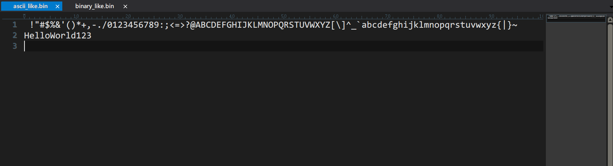
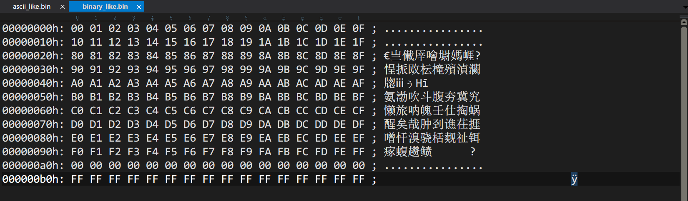
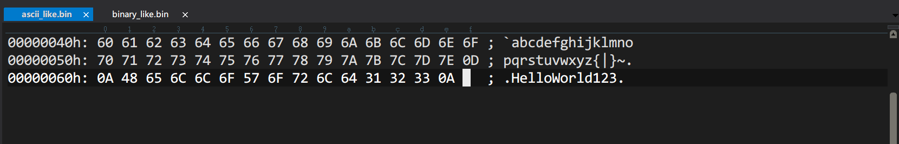
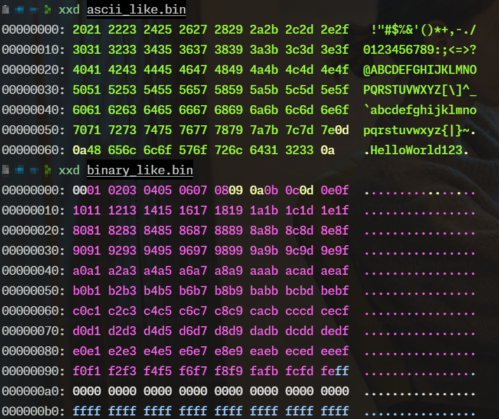
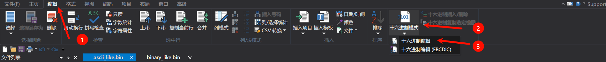

📘 bin 文件内容特征与编辑器打开模式行为分析
📘 bin 文件内容特征与编辑器打开模式行为分析
—— 以 UltraEdit 和二进制数据结构为案例剖析
一、背景与问题现象
在使用 [[UltraEdit]]、HxD、VSCode 等文本或十六进制编辑器查看 .bin 文件时，经常会遇到以下现象：
- 有些
.bin文件一打开就是 十六进制视图 - 有些
.bin文件却被当作 普通文本文件显示，看到一堆“乱码”或 ASCII 字符
这种行为并不是 bug，而是由编辑器的智能判断逻辑所决定的。
二、bin 文件的本质
✅ bin 是什么？
.bin 文件本质是“原始二进制数据的连续存储”，不包含结构定义、元数据或格式头。
特点如下：
| 特性 | 描述 |
|---|---|
| 原始性 | 没有文件头、格式标记、符号等 |
| 结构透明性 | 实际含义需由上下文或程序代码解析（结构体/位图等） |
| 广泛用途 | 存储固件、配置段、内存转储、Flash 镜像、资源文件等 |
三、UltraEdit 打开 bin 文件的“模式判断机制”
📌 默认逻辑（推测自长期使用）
UltraEdit 在打开 .bin 文件时，会根据文件内容前若干字节来判断：
- 是否为“文本”文件（显示为 ASCII）
- 是否为“二进制”文件（启用十六进制编辑模式）
🚦 判断依据（经验总结）：
| 条件 | UltraEdit 默认行为 |
|---|---|
| 文件前几个字节大部分为 ASCII 可打印字符（0x20~0x7E） | 默认以 文本模式 打开 |
| 包含大量控制字符或不可打印字节（0x00、0xFF、0x80~） | 默认以 十六进制模式 打开 |
📌 举例说明：
| 文件内容（前几字节） | UltraEdit 行为 |
|---|---|
41 42 43 0A 44 45（ASCII: “ABC\nDE”） |
文本模式（ASCII 显示） |
00 FF 80 1F CD AB（含非打印字节） |
十六进制模式 |
四、演示 Demo（实验证明）
我们设计了一个简洁的 Demo 程序，生成两个 .bin 文件：
#include <fstream>
#include <iostream>
#include <cstdint>
void writeAsciiLikeFile(const std::string& filename) {
std::ofstream ofs(filename, std::ios::binary);
for (int i = 0x20; i <= 0x7E; ++i)
ofs.put(static_cast<uint8_t>(i));
ofs << "\r\nHelloWorld123\n";
}
void writeBinaryLikeFile(const std::string& filename) {
std::ofstream ofs(filename, std::ios::binary);
for (int i = 0x00; i <= 0x1F; ++i)
ofs.put(static_cast<uint8_t>(i));
for (int i = 0x80; i <= 0xFF; ++i)
ofs.put(static_cast<uint8_t>(i));
for (int i = 0; i < 16; ++i)
ofs.put(0x00);
for (int i = 0; i < 16; ++i)
ofs.put(0xFF);
}
int main() {
writeAsciiLikeFile("ascii_like.bin");
writeBinaryLikeFile("binary_like.bin");
std::cout << "两个 bin 文件已生成，请用 UltraEdit 打开验证打开模式差异。\n";
return 0;
}
运行结果文件对比：
| 文件名 | 内容特征 | UltraEdit 默认模式 |
|---|---|---|
ascii_like.bin |
包含 0x20~0x7E 的可打印字符为主 | 文本模式，显示为字符 |
binary_like.bin |
包含 0x00、0xFF、0x80 等非文本字节 | 十六进制模式 |
UltraEdit default view of ascii_like.bin

UltraEdit default view of binary_like.bin

UltraEdit hex view of ascii_like.bin

xxd default view

✅ 小结：
这证实了：UltraEdit 并不是通过扩展名 .bin 决定打开方式，而是通过内容猜测文件类型。
五、为什么这是一个重要知识点？
当你调试嵌入式固件、分析存储格式或设计通信协议时：
- 你需要明确知道 bin 文件的结构和意义
- 编辑器可能误导你看到的内容（显示为乱码/文本）
- 确保编辑器使用正确模式打开，防止误改、误读
六、如何手动控制 UltraEdit 行为
✅ 切换为十六进制模式：
- 快捷键：
Ctrl + H - 菜单：
编辑 → 十六进制模式

✅ 设置固定扩展名默认 Hex 打开：
路径：
设置（Advanced） → 文件处理 → 二进制文件识别
在里面添加扩展名，例如：
*.bin; *.dat; *.raw
七、跨平台建议和工具对比
| 工具 | 默认打开 bin 行为 | 是否可强制十六进制 |
|---|---|---|
| UltraEdit | 按内容猜测 | ✅（Ctrl+H） |
| HxD | 默认十六进制 | ✅ |
| xxd | 十六进制命令行 | ✅ |
| VSCode + Hex 插件 | 需手动打开 Hex 视图 | ✅ |
| Notepad++ | 按文本打开 | ❌ 不推荐查看 bin |
八、开发建议
| 场景 | 推荐做法 |
|---|---|
| 写入结构体数据到 bin | 使用 #pragma pack(1) 避免结构体 padding |
| 避免 UltraEdit 把 bin 当作文本打开 | 文件中加入明显的非 ASCII 字节（如 0x00, 0xFF） |
| 设计 bin 文件头 | 可用 magic number（如 0xAA55）标记为 binary 格式 |
| 使用十六进制工具调试 | 结合 xxd、HxD、UltraEdit 十六进制视图 |
| 保证数据一致性 | 读/写时使用同一端序、对齐策略，并明确结构体布局 |
九、附录：推荐调试命令
xxd ascii_like.bin | head
xxd binary_like.bin | head
#include <cstddef>
std::cout << offsetof(MyStruct, field); // 查看偏移
十、总结
.bin文件的显示方式与其内容紧密相关。理解编辑器行为不仅能避免“乱码困惑”，更是确保你正确解析、修改、调试二进制文件的重要前提。